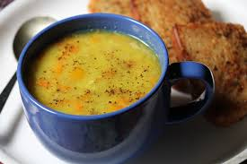

Dal Soup

Dal soup is a simple and nutritious recipe, ideal for babies, toddlers, or anyone looking for a light, healthy meal. Made with moong dal and minimal spices, this soup is both delicious and easy to digest.
Ingredients:
- 1/4 cup moong dal (yellow lentils)
- 1 1/4 cups water
- A pinch of turmeric powder
- Salt to taste
- 1/2 teaspoon cumin powder (optional)
- 1/4 teaspoon ghee (optional, for toddlers)
Instructions:
- Wash moong dal thoroughly until the water runs clear.
- In a pressure cooker or pot, add the dal, water, and turmeric. Cook until the dal turns soft.
- Once cooked, mash the dal or blend it into a smooth consistency using a blender.
- Add more water if required to adjust the consistency.
- Season with salt and optional cumin powder for flavor.
- Simmer the soup for a few minutes and serve warm.
Serving:
This dal soup can be served plain or with a dash of ghee for added flavor and nutrition. It's perfect as a starter or a light meal 😊.